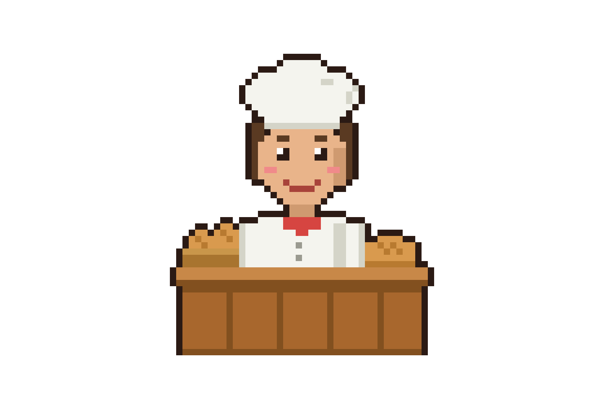

Como Jogar?
Vamos colocar a rotina do dono do Totó em ordem. Clique no cartão que acontece primeiro, depois no que vem em seguida.
Não tem pressa e não tem tempo. Se errar, é só tentar outro cartão!

Vamos colocar a rotina do dono do Totó em ordem. Clique no cartão que acontece primeiro, depois no que vem em seguida.
Não tem pressa e não tem tempo. Se errar, é só tentar outro cartão!